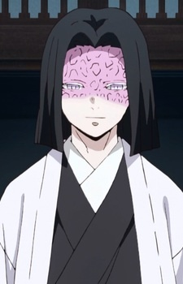

Кто я?
|
|
Мы мыслим - следовательно мы существуем, или же мы существуем пока кто-то мыслит о нас? Я - человек, которого с самого детства интересовали странные, сложные, непонятные, но
интересные штуки. |

Мои занятия
|
Я люблю заниматься типичными подростковыми занятиями
Составляют типичный наполнитель моего дня |


Полезность моего существования
С начала и до конца моя жизнь важна приносимой пользой. Начиная невероятно важной будущей работой, продолжая значимостью как член общества, заканчивая полезностью для самого себя.
Внезапный факт
Я невероятно люблю персонажей с каре


Ты добрался до конца, путник. Отдохни.